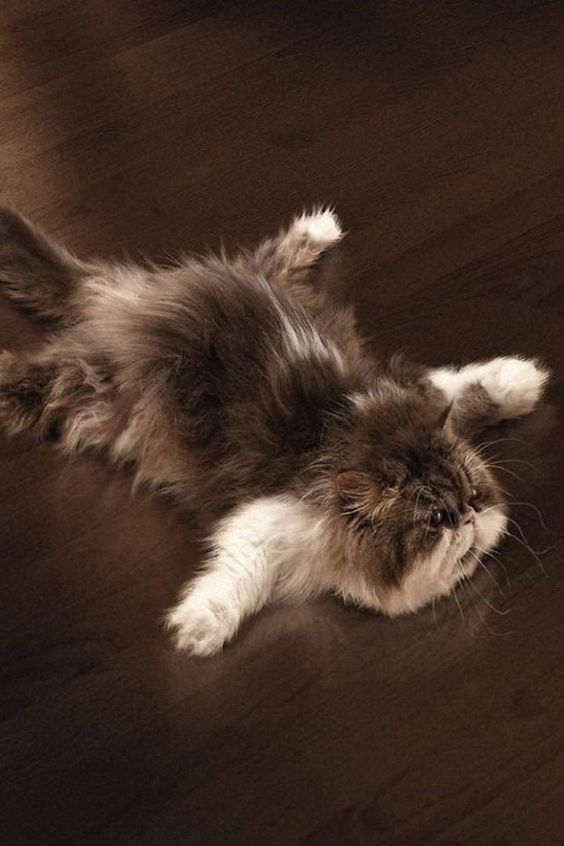

Best in Class
February 3rd, 2016
Once I graduate from DevBootcamp and get hired, I am rewarding myself by getting a kitten.
However, I know I can be very indecisive, so with my new knowledge of Ruby classes, I am going to create a program that will randomly generate the type of cat I should get. I want to be able to input options of breeds and names that I love, and also include whether it should be a male or female. Each new cat, or instance, that is created from this class will tell me the breed, gender, and name of my new cat. I'll even be able to pass my cat generator on to friends and it will continue to spit out cats, or objects, that follow this same blueprint of breed, name and gender. The name of this class will be YourFutureCat.
My first method will be to randomly select a breed from a list of options I enter:
class YourFutureCat def breed breed = ["Himalayan", "Persian", "Russian Blue", "Tabby", "Scottish Fold"].sample end
The #sample method chooses a string in the array at random, meaning it will pick one breed each time. I'll create a similar method to randomly select the gender and define it here:
def gender @gender = ["female", "male"].sample end
Hm, what is that @ sign in front of gender? That's called an instance variable. @instancevariables work across the instance of the class. Remember, an instance of a class just means one object, or one thing created by the class. In our case, one instance of this class will be one cat recommendation. Since I'll need to use the gender variable in my next method to choose a name (since the names I've chosen depend on gender), I'll need to be able to carry this variable over to a new method for names. This is achieved with an instance variable, which always has that @ sign in front of it. This means I can now use this variable in any other method in this class.
So I have a list of boy names and girl names, and I want my class to choose a boy's name if the cat is a boy, and a girl's name if the cat is a girl. Check this out:
def name
if @gender == "male"
name = ["Chunk", "Taco", "Pudge"].sample
else
name = ["Noodle", "Princess"].sample
end
end
Using our @gender instance variable, we can pick from the appropriate name category depending on the gender defined in the previous method. Again #sample will choose a random name from the array.
To create a new instance of this class I will use this syntax:my_cat = YourFutureCat.new
This just creates a new variable, my_cat, and sets it equal to a new instance, or object, of the class YourFutureCat. I'm going to call the methods we defined on my new cat my_cat like this so the cat's breed, gender, and name are displayed in a simple sentence:
puts "You should adopt a #{my_cat.gender} " + "#{my_cat.breed} and name it " + "#{my_cat.name}."
Are you ready for the result? Drum roll please...
=> "You should adopt a male Tabby and name it Pudge."
Alright, looks like that's settled! Can't wait to welcome Pudge in a few months.
